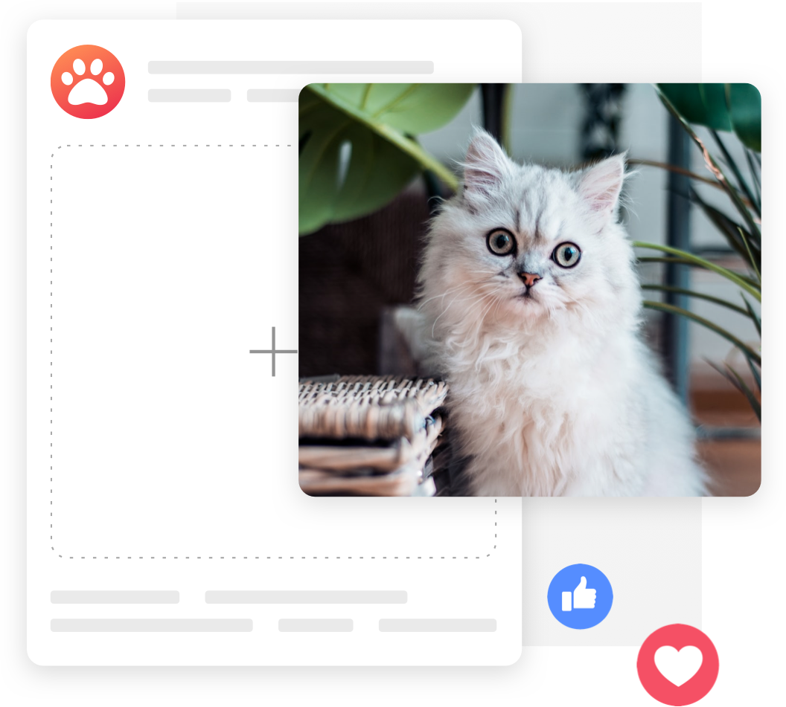
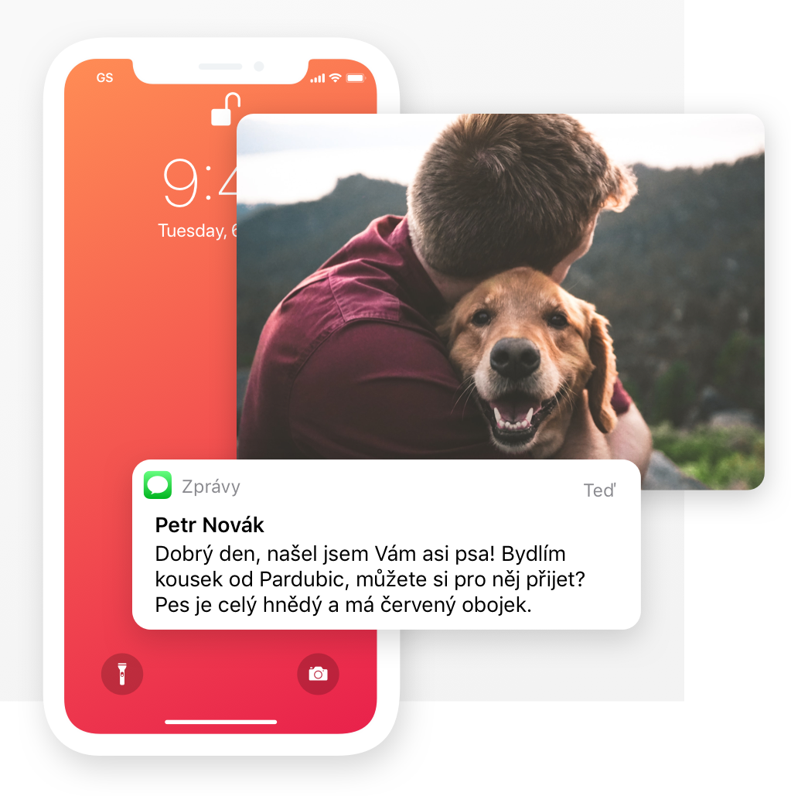

Ztratil se Vám domácí mazlíček?
Náš tým marketérů Vám ho pomůže najít pomocí detailně cílených Facebook a Instagram kampaní.
Jak to funguje?
Náš tým marketérů Vám ho pomůže najít pomocí detailně cílených Facebook a Instagram kampaní.
Jak to funguje?
0+oslovených lidí našemi kampaněmi
0roky zkušeností s FB reklamou
0%úspěšnost v hledání
0kočičích chlupů v naší kanceláři

Registrace Vám bude trvat jen pár minut
Fungujeme po celé ČR
7 dní v týdnu

Každý den s Vámi komunikujeme

Vyvoříme všechny příspěvky a naplánujeme celou kampaň na základě informací, které nám dodáte.
Kam se hrabou pátrací plakáty. Naše kampaně oslovují často i desetitisíce lidí během pár dní. Jak na vesnicích, tak ve městech.
O ztrátě najednou ví každý. Jakmile potom někdo Vašeho mazlíčka zahlédne nebo přímo najde - okamžitě o tom víte.
Vyvoříme všechny příspěvky a naplánujeme celou kampaň na základě informací, které nám dodáte.
Kam se hrabou pátrací plakáty. Naše kampaně oslovují často i desetitisíce lidí během pár dní. Jak na vesnicích, tak ve městech.
O ztrátě najednou ví každý. Jakmile potom někdo Vašeho mazlíčka zahlédne nebo přímo najde - okamžitě o tom víte.
Používáme speciální marketingové nástroje určené pro firmy, které se většinou snaží prodat nějaký produkt. My však pomocí této strategie hledáme Vaše ztracené mazlíčky. Za tento nástroj sice musíme zaplatit nemalé peníze, ale umožní nám potom naplánovat kampaň presně podle našich představ, což s normálními příspěvky není možné.

Facebook a Instagram nám pomocí jejich marketingových nástrojů umožňuje zaměřit přesně ty lidi, kteří bydlí v určitém okruhu od ztráty Vašeho mazlíčka. Tradičně oslovujeme všechny obyvatele v okruhu 10km (záleží však na terénu, velikosti okolních měst, atd.).

Všem těmto lidem se objeví na jejich sociálních sítích příspěvek, že se právě Vám ztratil mazíček, jeho fotky, kontakt na Vás, možnost sdílet a hlavně prostor na kometáře, kde si lidé mohou předávat informace. Pro představu - oproti SMS hledáním jsme tak 57x efektivnější a přibližně 74% zvířat se díky nám také najde.
"Člověk si vůbec neuvědomuje hodnotu takové služby do té doby, než ji opravdu potřebuje..."
Dara Novotná Šťastná paničkaBert se ztratil daleko od domova, kousek od polských hranic. Naštěstí se našel pár hodin od spuštění naší kampaně. Podařilo se nám ji totiž rozjet ještě ten stejný den a schválena byla během pár hodin.
Bert - JanovMalíček je kocourek, který nikdy nebyl venku. Jednoho dne však utekl a nikdo nevěděl, jak ho hledat. Za první den kampaně jsme oslovili 12 tisíc lidí z okolí, díky čemuž se nám kocourka podařilo vrátit v pořádku domů.
Malíček - ZlínNeli se ztratila v malé venici kousek od Humpolce. Lidé jí průběžně viděli pobíhat v ostatních obcích a začali postupně informovat majitelku. Na základě jejich hlášení jsme kampaň následně přizpůsobili pro lepší efektivitu. Po pár dnech se jí konečně podařilo najít.
Neli - HumpolecSushi se ztratila z panelového domu ve velmi zalidněné části Prahy. Během 2 dní jsme oslovili přes 9 tisíc lidí z okolí. Jakmile se o ztrátě dozvěděl i človek, který se této kočičky ujal, sám kontaktoval majitelku a vrátil Sushi domů.
Sushi - PrahaArny se ztratil při výkonu strážní služby v Pardubicích. Během pár dní se nám podařilo oslovit přes 37 tisíc lídí z Pardubic a okolí. Díky tomu se ho také podařilo najít.
Arny - PardubiceBarnie jednoho večera utekl ze zahrady u rodiného domu ve Zlíně. Celé 2 dny ho jeho majitelé hledali. Za 8 hodin od spuštění naší kampaně se podařilo oslovit více než 12 tisíc lidí z okolí jeho ztráty - včetně jeho zachránce, který ho ještě ten den v pořádku předal majitelům.
Barnie - ZlínJedná se o jednorázovou platbu, která pokryje celých 7 dní kampaně. Hlavní rozdíl mezi 3 balíčky je rozpočet na reklamu. S prémiovým balíčkem tedy můžete očekávat, že se příspěvek zobrazí více lidem, vícekrát a za nejkratší dobu (což je ve větších městech často třeba).
Facebook umožňuje ostatním firmám na jejich platformách vytvářet reklamy (sponzorované příspěvky), většinou za účelem prodat nějaký produkt. Jsme především digitální agentura a máme s tímto nástrojem velké zkušenosti. Jeho prostřednicvtvím dokážeme vytvářet velmi cílené a efektivní marketingové kampaně. Tentokrát ale nebudeme nic nikomu nabízet, ale oznamovat lidem ztrátu Vašeho domácího mazlíčka. Na základě Vašich informací tedy vytvoříme sérii Facebook a Instagram příspěvků, které pošleme na zeď všem lidem z okolí jeho ztráty. V průběhu kampaně Vás budeme denně informovat o jejím dosahu a reakcích ostatních lidí. Potencionální zachránce však vybízíme kontaktovat přímo Vás, abyste tak všechny novinky věděli právě Vy jako první.
Inzeráty tvoříme ve formě příspěvků na Facebook, Instagram a Instagram příběhů (Stories). Na konkrétní příklady se můžete podívat zde: Odkaz
Naše konkurence využívá především zastaralé, dražší a méně efektivní metody pro oslovení lidí z okolí ztráty Vašeho mazlíčka. Emaily dnes lidé pomalu ani neotevírají, SMSky sice fungují, ale oslovit s nimi stejné množství lidí jako oslovujeme my, by bylo neskutečně drahé (přibližně 57x) a proto je jejich dosah většinou tak malý. Ostatní Facebook skupiny, které se věnují ztraceným zvířatům mají rok od roku menší dosah, pro představu většinou ani 5% členů neuvidí Váš příspěvek - natož lidé z Vaší lokality, resp. lokality ztráty. Naopak my využíváme sílu placených reklam na nejpoužívanějších platformách, jako jsou v tuto chvíli Instagram a Facebook. Jsme navíce schopni oslovit mnohem širší skupinu lidí díky přesnému cílení na uživatele, s velkou pravděpodobností příspěvek sdílet dál. Protože jsme především digitální agentura, tak máme s tvorbou podobných kampaní mnoholeté zkušenosti.
Jednoduše všechny potencionální zachránce z okolí ztráty Vašeho mazlíčka. Mimo to se také snažíme cílovou skupinu filtrovat na základě různých osatních atributů hlavně proto, aby hledání bylo co nejefektivnější, obzvláště ve větších městech, kde se pohybuje opravdu hodně lidí. V takových případech dokážeme oslovit i 40 tisíc lidí - pokud je to třeba. Počet oslovených ale obecně velmi závisí na místě ztráty. Jedna kampaň trvá standardně 7 dní, přičemž první 3 dny jsou nejvíce intenzivní.
Ihned po přijetí registrace Vaše informace ještě jednou zkontrolujeme, zda-li je vše v pořádku. Pokud bude vše ok, pustíme se do tvorby příspěvků a pošleme je do Facebooku na schválení. Celý proces trvá většinou kolem 6 hodin, maximálně jeden den. Hodně záleží právě na rychlosti a vytíženosti Facebook platformy a době, kdy nám registraci posíláte. Dobrá zpráva je ta, že fungujeme všechny dny v týdnu! Takže není vůbec problém něco registrovat například v sobotu večer a v neděli už vše běží.
Jednoduše - odkaz na reklamu Vám pošleme okamžitě do emailu. Mimo to v průběhu kampaně Vás budeme denně informovat o jejím dosahu a reakcích ostatních lidí.
Ano, ale musíte být rychlejší než my. Jakmile se nám Vaše nabídka objeví v administraci, okamžitě na ní začínáme pracovat a posíláme za ní peníze Facebooku. Pokud něco chcete zrušit - zavolejte nám urychleně na číslo 605 176 305.
Jak už jste se mohli dočíst, využíváme především placených reklam na platformách jako Facebook a Instagram. To je něco úplně jiného, než klasické příspěvky na stránkách se ztracenými zvířaty. Za dosah se platí a kampaň musí nastavit zkušený digitální marketér. Kromě toho Váš inzerát musí projít také přes grafika, každý den s Vámi komunikujeme, kampaň dále upravujeme, atd.